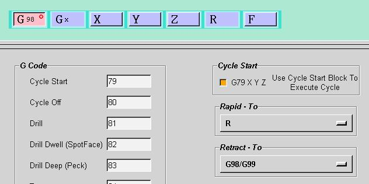

This dialog will allow you to configure the output canned drilling cycles.
UG/Post Builder will allow you to define all the parameters necessary to
format the canned cycles for your machine tool. Select the
cycle parameters to modify the current settings.
The dialog will allow you define and display how your basic canned cycles
will behave. You can define the G code that will be used with each
of the pre-defined cycles generated by the system. You can also modify
them using the G-code dialog. You can also define how each
element of the canned cycle will be output. For each canned cycle
there will be a position over the hole to the rapid
clearance plane in X Y and Z. The tool will then feed to depth.
In some cycles there will incremental feeds (DEEP, BRKCHP) and in others
you may have a programmed dwell at the bottom of the hole (DRILL,DWELL;
BORE,DWELL; BORE,MANUAL,DWELL). The tool will then either feed up
or rapid up depending upon the cycle. After the cycle is completed
you can program an additional retract to the RTRCTO plane.
You can also define how your canned cycles are defined and executed. Most canned cycles are defined and executed with a single block.
G81 X Y Z R F
This will cause a hole to be drilled at location XY.
However, some controls need a definition block and an execution block (Cycle Start Block).
G81 Z R F
G79 X Y
The G79 block will cause a hole to be drilled at location XY.
If you only need a G79 XY block, you can remove the Z from the G79
block.
If you require a different G code, you can modify the G ode.
The default and most common setting is to output R in the canned cycle block. The post will add the rapid to clearance distance along the tool axis to the top of the hole position.
The setting of None for the Rapid To parameter is useful if your machine uses cams or has manual control of the drilling cycles. Notice that the Z and F words have been deleted as well.
The option of Rapid Traverse & R will do a rapid positioning move to a point above the hole and then perform the drilling cycle.
The setting of Rapid
is used for machines such as the Bridgeport that do not have an R word
in the canned cycle. The post must position in X, Y and Z above the
hole to the rapid clearance plane. The canned cycle itself will only
feed in Z.
The option None means that the parameter will be ignored. The postprocessor assumes that the canned cycle will control this function.
The option K will output a K
word in the canned cycle block. This is used by Kearney & Trecker
controls specifically.

The setting of G98/G99 will include a G98
or G99 code in each canned cycle block. This is used by Fanuc controls
and determines whether the tool retracts to the R plane or the last non
cycle Z position before the canned cycle. The parameter RTRCTO,MANUAL
causes the post to output a G99 and the parameter RTRCTO,AUTO
causes the postprocessor to output a G98.
The setting of Rapid Spindle will cause the postprocessor to output a rapid move along the tool axis after each canned cycle to the retract to position.
The setting of Cycle
Off then Rapid Spindle will cause the postprocessor to cancel the canned
cycle and then output a rapid move along the tool axis after each canned
cycle to the retract to position.
Another method that may be used is to specify a user defined event to
a tool or operation and use the mom variable you have created in the canned
cycle.